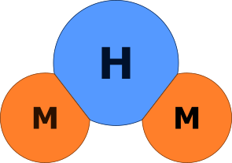

HomeInstallationUsageIndex
HomeInstallationUsageIndex GitHub
</>
GitHub
</>


M2H creates structured, well-formatted static HTML sites with minimal effort. It can be used for many kinds of writing projects.
This documentation was written entirely using M2H and serves as a real-world example of the tool in action.
You write a Markdown text like this:
!!! note
A **monad** is just a _monoid_ in the category of `endofunctors`.M2H converts it into HTML code like this:
<div class="admonition note">
<p class="admonition-title">Note</p>
<p>A <strong>monad</strong> is just a <em>monoid</em> in the category of <code>endofunctors</code>.</p>
</div>Then it includes this code into a specially prepared HTML template and produces the page that looks like this:
Note
A monad is just a monoid in the category of endofunctors.
M2H automates the conversion of Markdown texts into HTML pages and provides templates and styles that are either ready to use or easy to adapt and extend.
In addition, it supports processing whole document sets, organizing the output, and producing self-contained static HTML sites that needs only a browser to be viewed.
Finally, M2H includes plugins that automate common tasks and help the result look professional.
M2H doesn't impose many restrictions on project organization and lets users define their own configuration. Still, it provides recommended project structures described in this manual and implemented in the quick start scripts.
M2H is a command line utility available in two versions: Python and Java. They work mostly the same way, share the same command line syntax, and process the same inputs. The versions are independent and can be used separately, but they are shipped together as source code and share common artifacts (templates, styles, scripts, and this documentation). This manual describes the both versions.